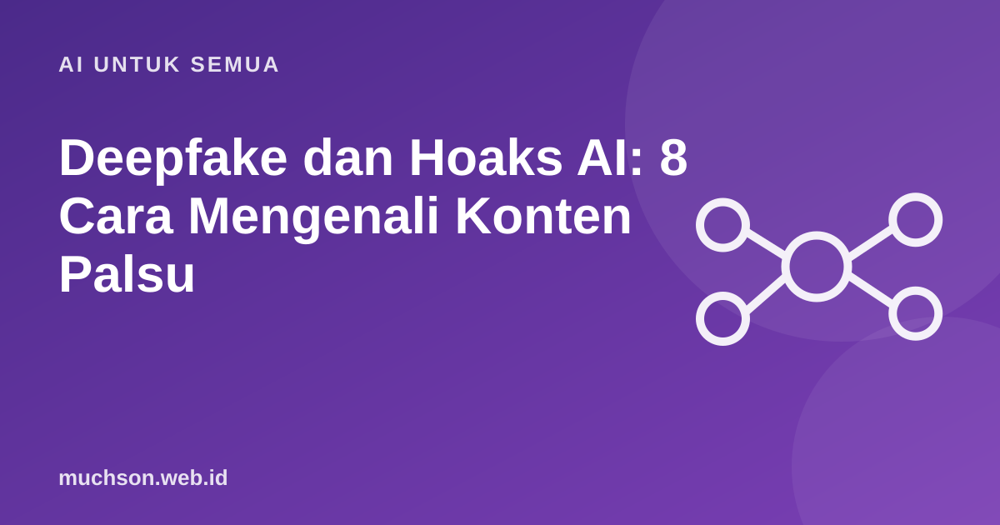

Beranda › Artikel › AI untuk Semua
AI untuk SemuaDeepfake dan Hoaks AI: 8 Cara Mengenali Konten Palsu
Teknologi pembuat gambar, suara, dan video makin mudah diakses, dan itu dipakai juga untuk penipuan dan penyebaran hoaks. Tidak ada cara satu-satunya untuk mengenalinya, tetapi kebiasaan memeriksa sebelum percaya bisa memutus sebagian besar penyebarannya.

Delapan hal yang bisa diperiksa
- Sumber. Siapa yang mengunggah pertama kali? Akun resmi atau akun anonim?
- Konteks. Apakah ada pemberitaan dari media tepercaya yang membahas peristiwa yang sama?
- Detail aneh. Jari, gigi, telinga, bayangan, dan teks di latar sering janggal pada gambar AI.
- Gerak dan suara. Pada video, kedipan, sinkron bibir, dan intonasi bisa terasa tidak wajar.
- Emosi berlebihan. Konten yang membuat marah atau panik sering sengaja dirancang agar cepat menyebar.
- Cari ulang gambar. Gunakan pencarian gambar terbalik untuk melihat asal gambar.
- Permintaan mendesak. Penipu suara palsu sering meminta transfer atau kode secara terburu-buru.
- Tanya langsung. Hubungi orang bersangkutan lewat jalur lain yang Anda percaya.
Latihan: bagaimana Anda bereaksi?
Melindungi diri dan keluarga
Tanya jawab
Apakah alat pendeteksi deepfake bisa diandalkan?
Membantu, tetapi tidak sempurna dan terus berlomba dengan teknologi pembuatnya. Gabungkan dengan verifikasi sumber.
Apakah semua gambar AI itu hoaks?
Tidak. Banyak yang dibuat untuk seni dan hiburan. Hoaks muncul ketika gambar dipakai untuk menipu atau menyesatkan.
Apa yang harus dilakukan jika wajah saya dipakai tanpa izin?
Simpan bukti, laporkan ke platform, dan bila perlu ke pihak berwenang. Kunjungi layanan pelaporan resmi.